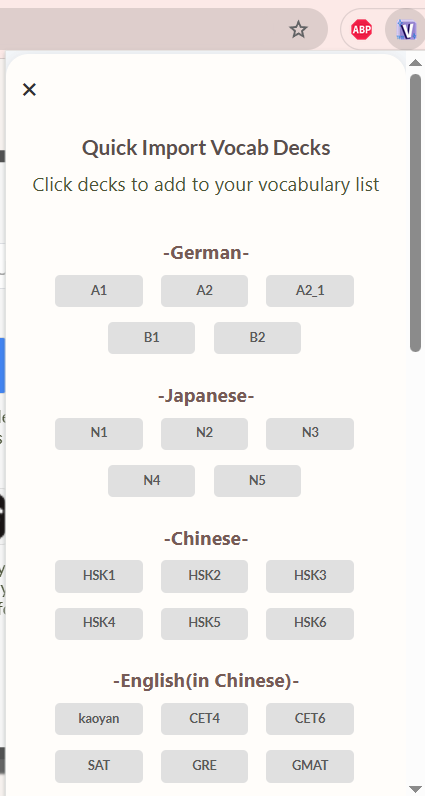
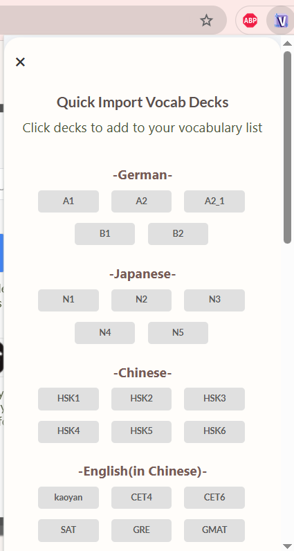

FLIZ Quick Start Guide
Install the Extension
First, head over to the Chrome Web Store page and click "Add to Chrome" button to install FLIZ.
This grants the extension permission to replace your default New Tab page and display vocabulary.

Pin FLIZ for Quick Access
Click the Puzzle Piece icon (Extensions menu) in your browser toolbar, find "FLIZ," and then click the Pin icon (purple icon in the image) to ensure the Quick Lookup menu is always visible and one click away.
Pinning the extension makes adding new words much faster!

What your New Tab look like when you just intalled the extension
You new tab will look like this when the extension is just downloaded. Don't worry, I will show you how to quickly install premade decks in the next steps.
- Learn your vocabs: Start a flashcard review session.
- Test your vocabs: Start a quiz mode to test your retention.
- Snooze: Temporarily hide the vocabulary card.
Load Vocabulary Quickly
Use the extension pop-up (by clicking the pinned FLIZ icon) and look for the "easy import decks" link. Here you can load pre-made decks like German, Latin, Japanese, Chinese and more with a single click!
This is the fastest way to build your initial vocabulary list.
 

Open a new tab
Once you have loaded a deck, you newtab page will now look like this. Enjoy!